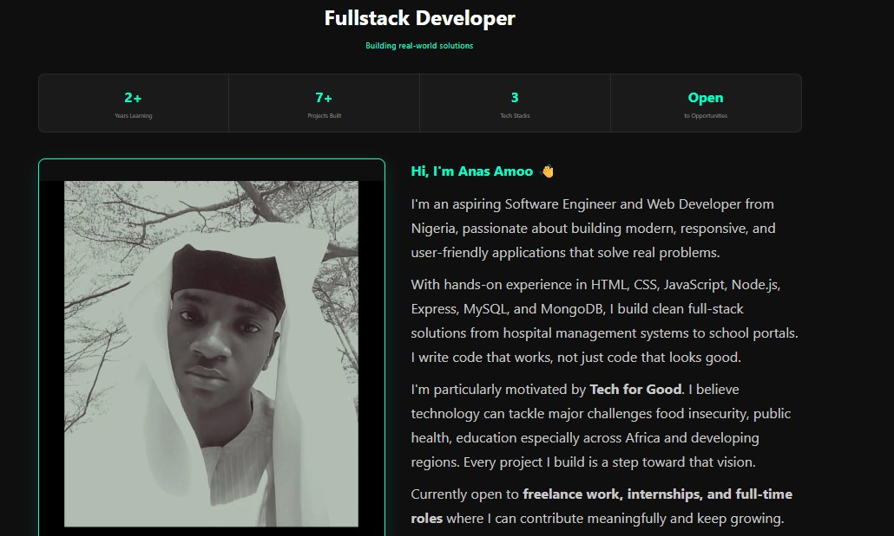
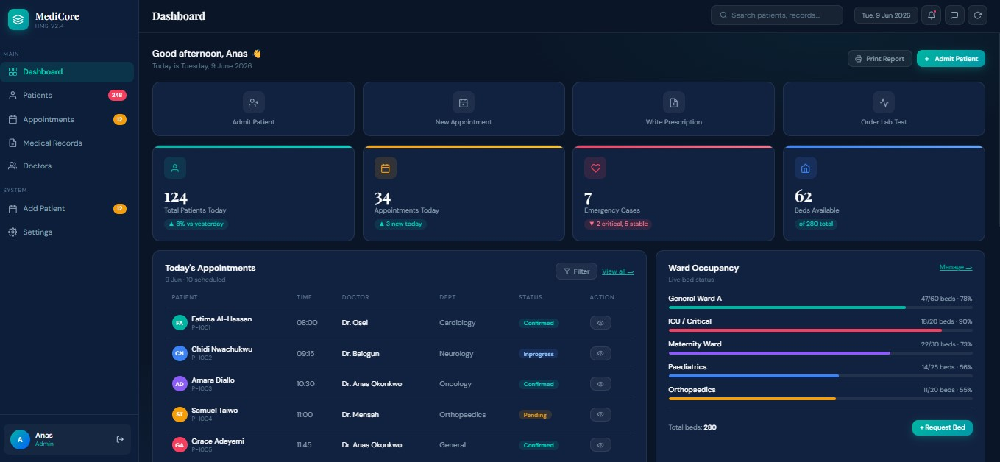
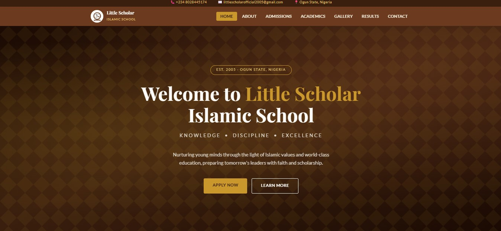

Discover my journey, skills, and projects as a passionate developer. I'm continuously learning, building, and improving my craft through real world projects.
I'm currently open to freelance opportunities, internships, and entry-level roles where I can contribute, learn, and grow as a software engineer. Thanks for visiting my portfolio—feel free to explore my work and connect with me.
I'm Anas, a frontend developer and aspiring software engineer passionate about building clean, responsive websites. I enjoy turning ideas into interactive experiences while continuously learning new technologies and improving my skills.
Want to know more about my journey, skills, and goals? Read my full story.
Read More About MeI am skilled in HTML, CSS, and JavaScript for building responsive and interactive websites. I also have a strong foundation in C programming, which strengthens my problem solving and logical thinking. In addition, I use Git and GitHub for version control and managing my projects effectively.
I focus on creating clean, user-friendly designs and I am continuously learning new technologies to improve my development skills.
Here are some of the projects I've worked on. Each project represents a unique challenge and an opportunity to apply my skills and creativity.



I’m currently open to freelance opportunities, internships, and collaboration on exciting projects. If you have an idea, a project, or an opportunity, I’d love to hear from you.
Let’s build something great together.